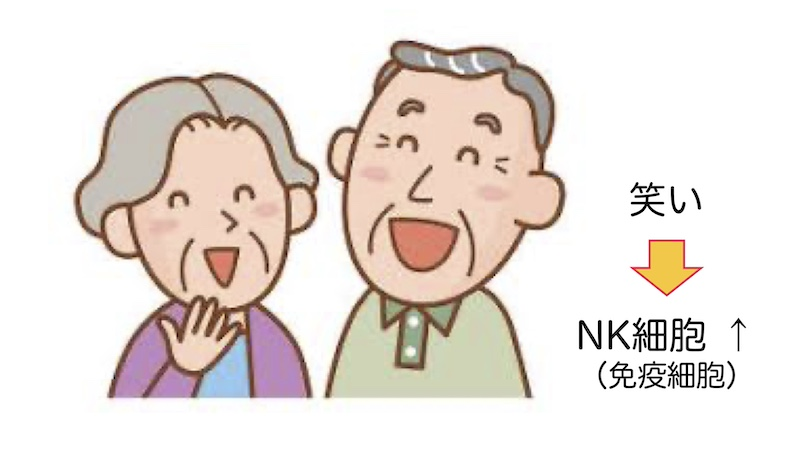
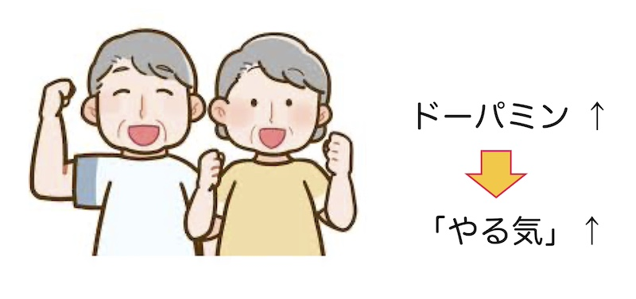

公開日：2026年3月｜最終更新：2026年8月
「病は気から」という言葉を聞いたことがある方は多いと思います。
「病気の回復や悪化が心の持ち方や精神状態に大きく左右される」という意味のことわざです。
一方で、「気の持ちようで病気が治るわけではない」と感じる方もいるでしょう。
実は最近の医学・脳科学の研究から、
私たちの気持ちや考え方が、脳を通じて体の働きに影響を与えている
ことが、少しずつ分かってきています。
ここでお話しする内容は、気合いや精神論ではありません。
医療や治療を否定するものでもありません。
「体が本来もっている”力（回復する力・抵抗する力）”を、”脳や心”がどう助けているのか」を、できるだけ分かりやすくお伝えします。
第１章 脳は「体の司令塔」
体調が悪いとき、私たちは「細菌やウイルスのせい」と考えがちです。
もちろんそれも正しいのですが、実は脳そのものが症状をコントロールしていることがあります。
脳の「視床下部」という部分は、
- 発熱
- 食欲がなくなる
- 体を温めようとする行動
この部分の神経細胞を刺激すると、感染していなくても「体調が悪いときの症状」が起こることが確認されています。
参考文献１）
これは、体が壊れているというより、
「今は休んだほうがいい」という脳からのメッセージ
とも考えられます。
第２章 記憶と免疫はつながっている
脳の中には、過去の病気の体験を記憶している場所があります。
この部分は、
- 自律神経
- 感覚
- 感情
研究では、過去に腸炎を起こしたときの免疫反応を、この脳の部分が覚えていて、刺激すると同じような免疫反応が起こることが示されました。
参考文献２）
つまり、脳は体の状態を覚えており、免疫の働きにも影響している のです。
第３章 気持ちと病気の関係
昔から医療の現場では、 「前向きな人のほうが回復が早いことがある」 と言われてきました。
最近の研究では、
- 不安や強いストレスが続くと、心臓や免疫に悪影響が出やすい
- 前向きな気持ちは、治療を続ける意欲を保ちやすい
ことが報告されています。
参考文献３）
- 免疫力の向上
- 慢性疾患の管理
- うつ病や不安の予防改善
- 手術や治療の回復促進
- 寿命の延長 など
「前向きなら病気が治る」という意味ではありません。
前向きな気持ちは、「体が回復しようとする環境を整える」働きをしている、と考えられています。
第４章 笑いと免疫の話
「笑うと体にいい」とよく言われますが、これにも科学的な裏付けがあります。
研究では、漫才や喜劇などで大いに笑ったあと、
NK細胞の働きが短時間で高まる
ことが報告されています。
参考文献４）
NK細胞は、がん細胞やウイルス感染細胞を見つけて攻撃する、重要な免疫細胞です。
加齢や強いストレスで、その働きは弱くなりやすいことが分かっています。

（参考）日常できること
- 睡眠を７時間以上とる
- 過度なストレスを避ける（専門医に相談）
- 楽しく笑う
- 適度な運動をできれば週３回
- 好きなことを見つける
- 笑顔を心がける（作り笑いでも）
笑いは薬ではありませんが、
体を守る力を後押しする行動
だと言えます。
第５章 「やる気」は脳の働き
「最近、何をするのもおっくう」
それは怠けではなく、脳の働きが関係していることがあります。
ドーパミンは、
- 意欲
- 楽しさ
- 達成感
美味しいものを食べる、人と話す、軽く体を動かす。
こうした日常の行動が、脳を刺激し、意欲を保つ助けになります。
（より詳しく）ドーパミンを増やす方法
- 美味しいものを食べる
- 達成しやすい目標を立て、達成できたら自分を褒める
- 好きな音楽を聴く
- ドーパミンを作るのに必要なタンパク質をとる
- 瞑想する（後述）
- 次々と新しいことにチャレンジする

第６章 マインドフルネス ― 難しくありません
「マインドフルネス」とは、瞑想（目を閉じて）を通して、 「今この瞬間」に注意を集中する トレーニングです。

特別な道具や宗教的なことは必要ありません。
- 目を閉じ、背筋を伸ばして座る（体の中心を知る）
- ゆっくり呼吸する（繰り返される呼吸にただ集中する）
- 呼吸に意識を向ける（1〜5分）
これだけでも、
- 気持ちが落ち着き、集中力が高まる
- 眠りやすくなる
- 不安が和らぎ、ストレスが解消される
＊ 不安が強い場合は、無理をせず専門家へ相談してください。
第７章 まとめ
「病は気から」という言葉は、 単なる気合論ではなく、 脳と体が深くつながっている ことを表した言葉とも言えます。
治療や医療を大切にしながら、
- よく眠る
- 笑う
- 人と関わる
- 呼吸を整える
といった日常の行動で、体をそっと助けてあげることが、健康につながります。
※ 本ページは、参考文献や、医学・看護学の研究報告をもとに、高齢者・一般の方にも理解しやすい形でまとめたものです。
参考文献１）Osterhout J.A. et al. Nature, 606, 937 (2022)
参考文献２）Koren T. et al. Cell 184, 5902 (2021)
参考文献３）Everson-Rose S.A, Lewis T.T. Ann Rev Public Health 26, 469 (2005)
参考文献４）厚生労働省 e-ヘルスネットから
＊ 文献番号は本文中の記載と対応しています。